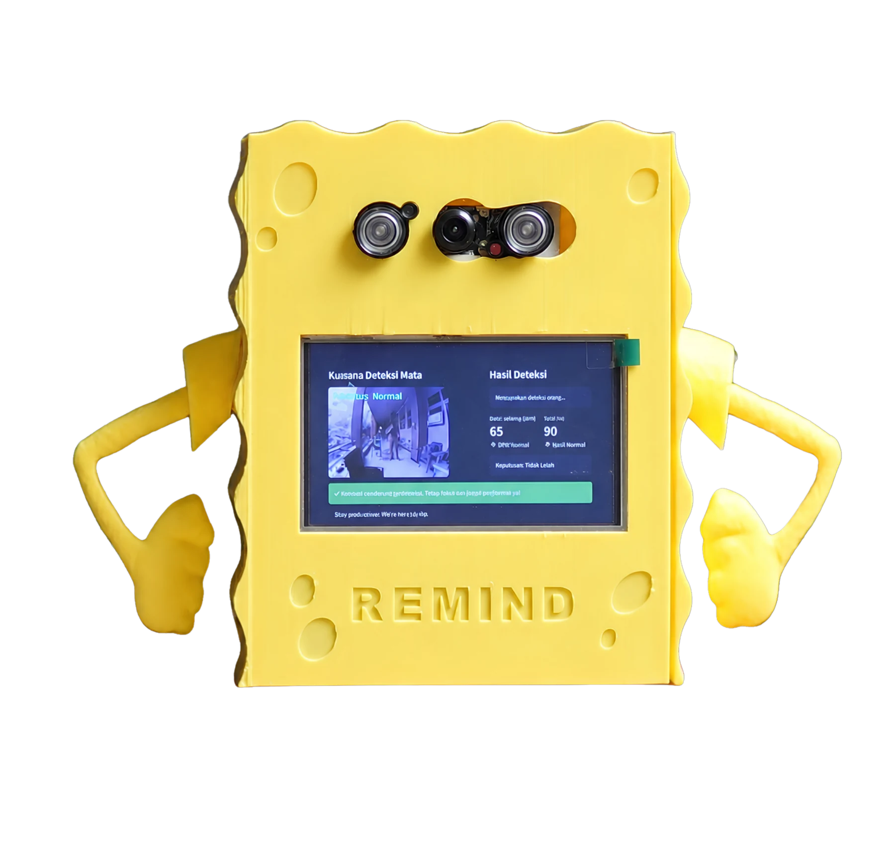

Eye-state classifier
Menyiapkan komponen model untuk membedakan kondisi mata terbuka dan tertutup dari masukan kamera.
Semua Proyek/REMIND Driver Safety System
← Kembali ke semua proyekComputer Vision · Deep Learning · IoT
Prototipe capstone pemantauan kelelahan pengemudi yang mengintegrasikan deteksi kondisi mata berbasis kamera dengan pembacaan denyut jantung dan SpO₂.
Integrasi sistem

Proyek ini mengeksplorasi cara menggabungkan dua jenis masukan dalam satu perangkat lokal: kondisi mata dari kamera dan pembacaan sensor fisiologis. Tujuannya adalah membangun demonstrasi terintegrasi yang dapat mengolah masukan, menampilkan status, dan memberi peringatan melalui perangkat yang sama.
Proyek capstone ini dikerjakan oleh tiga anggota. Kontribusi utama saya berada pada pengembangan klasifikasi kondisi mata terbuka dan tertutup sebagai masukan bagi subsistem pemantauan visual. Perakitan perangkat, integrasi sensor, antarmuka, dan pengujian prototipe dilakukan bersama tim.
Menyiapkan komponen model untuk membedakan kondisi mata terbuka dan tertutup dari masukan kamera.
Membantu menghubungkan keluaran klasifikasi mata ke logika status pada prototipe.
Mendukung penyatuan subsistem visual dengan sensor, display, dan mekanisme peringatan pada Raspberry Pi.
Kamera dan pipeline computer vision mengamati kondisi mata pengemudi secara real-time.
MAX30102 membaca sinyal BPM dan SpO₂ ketika jari terdeteksi pada sensor.
LCD, buzzer, dan antarmuka menampilkan status serta himbauan berdasarkan keluaran sistem.
Raspberry Pi, kamera, sensor, serta antarmuka dinyalakan.
Kamera mengirim frame untuk evaluasi kondisi mata.
Model klasifikasi menentukan keadaan mata sebagai input sistem.
Sensor MAX30102 membaca BPM dan SpO₂ ketika tersedia.
Status, buzzer, dan himbauan disajikan pada antarmuka.
Kamera, klasifikasi kondisi mata, sensor MAX30102, display, dan buzzer dapat dijalankan dalam satu prototipe berbasis Raspberry Pi 5.
Masukan perangkat dapat diproses menjadi status pada antarmuka dan respons peringatan dalam skenario demonstrasi tim.
Tidak ada angka akurasi atau klaim efektivitas keselamatan yang ditampilkan karena bukti yang tersedia berfokus pada keberhasilan integrasi prototipe.